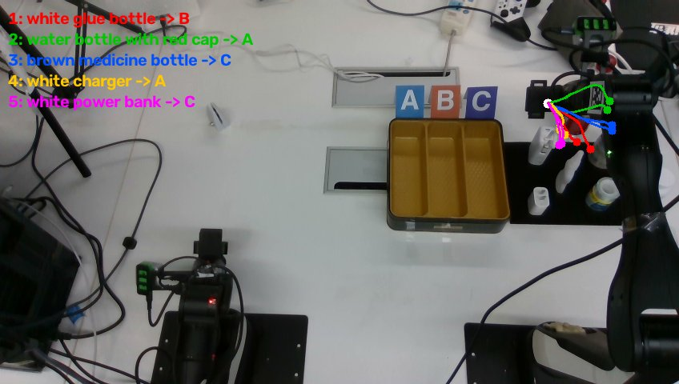
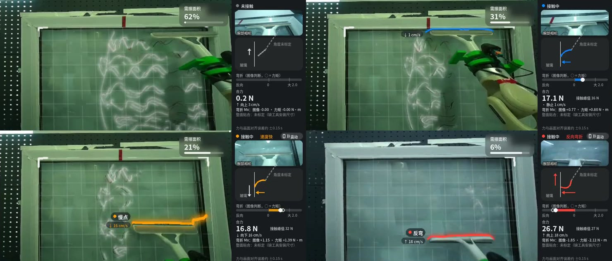
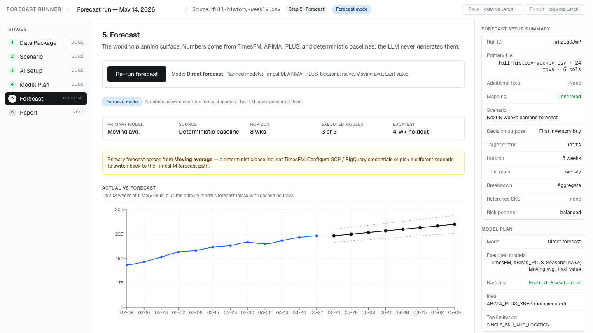
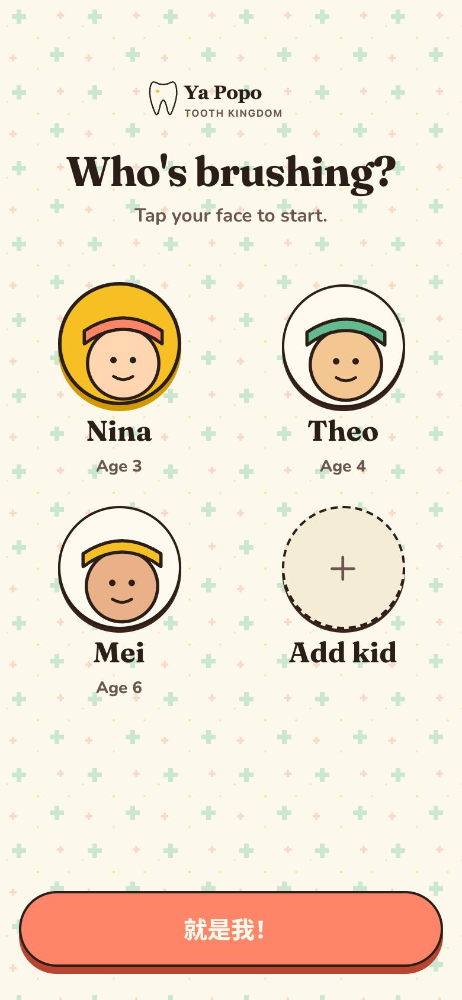

I build robots that learn from the human who corrects them — and the software that gets AI into real factories.
Vision-language-action policies fail at the edges of their training data. Hitting e-stop or switching to full manual control throws away the exact moment the robot was most confused.
Keep the policy in the loop. When it drifts, let an operator see without latency and nudge the arm gently — turning every edge-case recovery into on-policy training data.
An end-to-end system built in-house: 90 Hz spherical VR vision on PICO, fast ImageNet perception & residual small models, π0.5 fine-tuning, and compliant human takeover.
How slow foundation VLA policies (π0.5), fast perception & residual small models (TensorRT), and human compliant takeover connect inside one continuous loop.
Clean post-training requires more than video. Every demonstration logs overhead and wrist RGB streams in lockstep with 6-DOF joint angles, commanded targets, gripper aperture, and motor effort.
Over two days of collection on our order-picking bench, we logged 632 episodes (5.3 hours, 590 successful completions) exported directly to LeRobot v2.1 format for π0.5 fine-tuning.
When a fine-tuned VLA policy drifts near bin boundaries or novel object poses, the standard response is an emergency stop or full manual takeover — discarding the exact state where the policy needed help.
I built a compliant residual layer on an Airbot arm: while π0.5 runs continuously, joystick input blends a bounded fingertip delta into the policy's target before inverse kinematics and safety gates. The arm yields smoothly and logs the human correction right where the model is weakest.

Raw RGB frames don't tell a controller where the tabletop ends, when a human hand enters the workspace, or whether a target object is still behind the moving arm. I built a GPU-accelerated 3D world-state engine (gpu_world.py) that fuses dual calibrated RealSense RGB-D streams (head + side) into the robot's base frame at 15 Hz (4.8–9.0 ms display latency).
Each cycle runs URDF mesh self-filtering to subtract the moving manipulator from the depth cloud, compares against a per-pixel statistical background model, and updates a 1 cm Euclidean Signed Distance Field (ESDF) voxel map. Tabletop objects are tracked in 3D with live velocity (mm/s) and occlusion memory (Static / Moving / Occluded — retaining object permanence even when the arm blocks a camera's line of sight), while a 15 cm proximity hazard envelope feeds the L1 safety gate to scale speed or halt before contact.
Wiping glass requires sustained ~20 N normal pressure and smooth lateral lane transitions; a pure vision policy easily loses blade contact or stalls near window frames. I trained a base Diffusion Policy (CLIP ViT-B/32 + U-Net, 8-step DDIM on Jetson AGX Orin) on 300 demonstrations to wipe glass on our 7-DOF humanoid arm in Cartesian impedance mode (IMP_CART).
Instead of aborting when the policy under-presses or drifts, an operator holds a 3D Systems Touch force-feedback stylus (feeling live 3-axis tool contact forces at 100 Hz) and applies smooth compliant residual corrections directly on top of the running base policy (Vt = B(t) ∘ ΔR(t) ∘ exp(−F_exp / K_eff)). The base policy never breaks stride — and every stylus correction is logged as a 15-D residual label to train a lightweight 50 Hz residual policy (MLPResidual) that automatically corrects the frozen base model on future runs.
Teleop video arrives late over the network. If the image lags behind your head, the room appears to swim every time you look around, making fine contact work exhausting.
Following NimbRo (winner of the ANA Avatar XPRIZE), every stereo fisheye frame carries the camera's capture-time pose. The PICO 4 Ultra headset projects each frame onto a 1 m sphere and redraws locally at 90 Hz from the operator's real eye position — so turning your head has zero perceived delay while Luna's physical neck catches up.
Through a VR headset, transparent glass offers almost no visual cues for remaining streaks, plane depth, or squeegee blade bending. Instead of running a heavy VLM, we trained fast ImageNet-pretrained vision small models using automated multi-demo medians and 6-axis F/T sensor teachers — zero manual pixel or frame labeling.
A U-Net + ResNet18 segments dirt and the physical tool in 5.8 ms (0.95 tool IoU), fused with SGBM stereo disparity and RANSAC glass-plane fitting (>99% on-glass dirt isolation) so AR stain glow hides naturally behind the arm. In parallel, a wrist-camera ResNet18 (0.46 ms TensorRT) regresses blade contact force and bending torque Mx (r = 0.959, 98.2% contact accuracy), driving blade-edge warning lines (reverse-bend / high-speed alerts) and PICO controller haptics to cue compliant human takeover.

logged demonstrations across π0.5 bin picking (632) and Diffusion Policy glass wiping (300)
dual-RealSense 3D ESDF world-state reconstruction with occlusion memory & 15 cm safety envelope
ImageNet U-Net dirt/tool AR & 98.2% wrist ResNet18 contact accuracy (0.46 ms TensorRT)
non-destructive compliant takeover (PICO & Touch haptic stylus) training 50 Hz residual small models


If you're building or backing robots that work in the real world, let's talk.